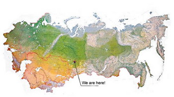

Silikonske doline na više strana
Prema mojim izvorima (New York Times i Fortune),u bivšem Sovjetskom Savezu postoje bar dve potencijalne/svojevrsne Silikonske doline. Jedna se nalazi u Talinu, Estonija, a druga u Novosibirsku, Rusija.
U Talinu je nastao Skype. Tekst je iz NYT, stari, još iz decembra 2005. godine. Ali odlično napisan i sve:
"Poseta prostorijama Skype-a liči na slučajno nalaženje tajne laboratorije u Džems Bond filmu, gde ludi naučnici smišljaju kako da zavladaju svetom.
Dve godine stara kompanija, koja nudi besplatne razgovore putem interneta, sakrivena je na kraju neobeleženog hodnika u sumornoj univerzitetskoj zgradi iz sovjetskog doba, na periferiji ovog baltičkog lučkog grada. U pet popodne u ovo doba godine, sunce je odavno zašlo, a oštar vetar ispraznio je ulice.
Unutar Skype-a, međutim, stvari su pune života, kao i svuda u estonskoj tehnološkoj industriji. Ova kompanija postala je odlična preporuka za Estoniju, zemlju na severu koja se tek prošle godine [kao što rekoh tekst je iz 2005.] priključila Evropskoj uniji, ali je pretvorila sebe u neku vrstu Silikonske doline na Baltičkom moru." Koga tema interesuje, preporučujem da pročita ceo NYT text, a o širem kontekstu i komparaciji Srbije i Estonije već sam pisala prošlog leta.
***
Novi internet portal jedne od najvećih planetarnih selebritija Opre Vinfri pravi se u Sibiru, preciznije u Akademgorodku (Akadem gradu), 30-ak km od Novosibirska (u prevodu: in the middle of nowhere).
Taj akademski grad nastao je nakon što je 1958. Nikita Hruščov odobrio izgradnju velikog multidisciplinarnog naučnog centra koji je osmišljen kao sovjetska varijanta Kembridža, Masačusets, gde se nalaze MIT i Harvad. Sve je teklo dobro, naučnici iz raznih delova zemlje selili su se u Sibir i bavili se raznim problemima nauke, od genetike, do nuklearne fizike i šire. Tridesetak godina to je bio najpametniji centar imperije, a onda su se zemlja i ekonomija raspale, pa tako i Akademgorodku. Međutim, preduzimljivi pojedinci su našli načine da naprave partnerstva sa moćnim IT kompanijama širom sveta i stvore tehnološke oaze unutar ruševnog akademskog kompleksa. O svemu tome više u magazinu Fortune od pre mesec dana.
***
Kod nas postoji neki razvojno-tehnološki centar na Novom Beogradu, ali je i u domaćoj i u stranoj javnosti Beograd definitivno poznat i kao Silikonska dolina zbog dorćolske ulice i pratećeg lifestyle, a ne zbog IT-a. Kako to tako?
Komentari
 Maja | 22.04.07 18:55
Maja | 22.04.07 18:55
Majo, to vec nesto govori, right?:) Evo nesto o centru ovde: http://www.ekonomist.co.yu/magazin11/broj_299/ruc/ruc1.htm
 RSS feed
RSS feed
 sadržaji se objavljuju pod
sadržaji se objavljuju pod
Komentari
Zbog tehničkih problema komentari stigli do početka jula 2007. su sada u okviru teksta
Yahti | 02.08.07 13:11
Razvojno Tehnološki Centar R.T.C. Beograd, ne N.Beograd, nevladina organizacija,
Postoji i Naučno tehnološki park IHIS Zemun,
Ovo što stoji u pregledu verovatno ima neke veze sa jednim od naših projekata, ko god da uređuje stranu mogao bi bar da preko pretraživača pronađe podatke o predmetnom imenu.
Srdačan pozdrav
Miodrag Živković | 19.10.07 13:32